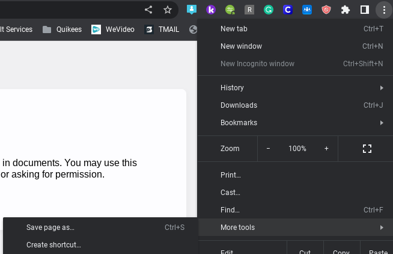
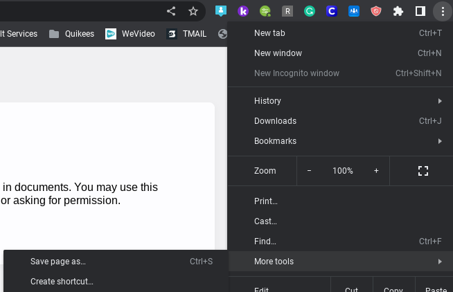

Please use an alternative URL!
This one may be Old, Blocked, or Danger-flagged.If you use NW as a bookmark, skip to step 2!
Step 1 - Uninstall
Uninstall any old versions of the app.


Step 2 - Reinstall
Open one of the following links:
MCPE
FishMe
FishMe (mediaology)
FishMe (foxmoss)
DONT FeedMyMonkey
Crabdance
HappyMC
KingKoopa
Then, create a windowed shortcut for it.
Three Dots > More Tools > Create Shortcut
 Once your in, login again with the details.
MCPE
FishMe
FishMe (mediaology)
FishMe (foxmoss)
DONT FeedMyMonkey
Crabdance
HappyMC
KingKoopa
Then, create a windowed shortcut for it.
Three Dots > More Tools > Create Shortcut
 Once your in, login again with the details.